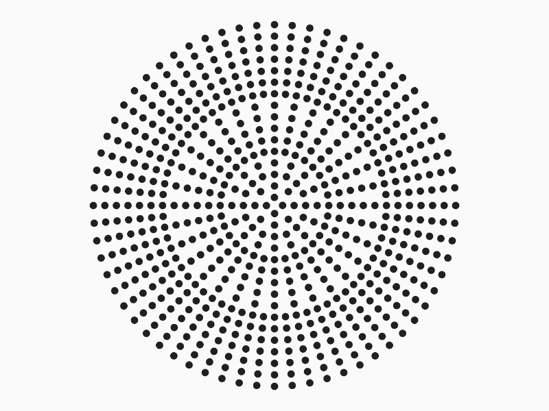

Karsh Ranjan
Innovator who looks at the world through the lens of engineering. Motivated by purpose, I
was awarded the "Innovator Impact" award at
Babson College, and I was offered an officer role in the U.S. Marine Corps.
Disciplined, I am preparing for a 100 km ultra-marathon, and I received the Vice-Chancellor
Excellence Scholarship at
Swinburne University of Technology, from where I graduated with Distinction in
Engineering Honours.
Previously, I worked for a
biotech
startup based in Melbourne, where I wrote the firmware for the patented rheometer
device. A detailed summary of my work can be found in this
letter of
completion. This experience sharpened my low-level development skills and
familiarised me with the
ESP32 platform.
Github |
LinkedIn |
Email |
PGP Key